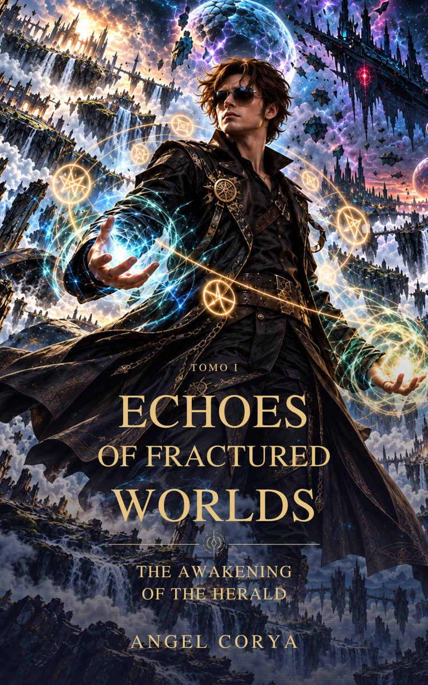

Volume I · Where it all begins

ECHOES OF FRACTURED WORLDS
Awakening of the Herald
An ordinary life. An impossible talisman. The first step into worlds that will change Mark forever.
Buy on Amazon ↗Books in Spanish · Opens Amazon in a new tab